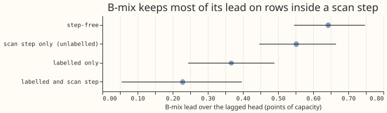
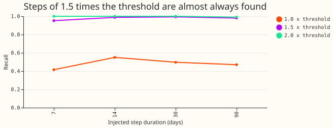
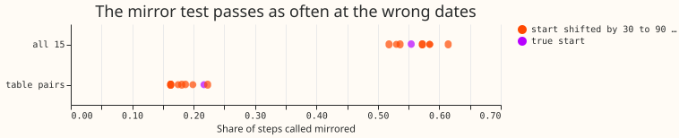
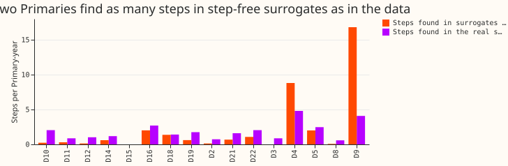
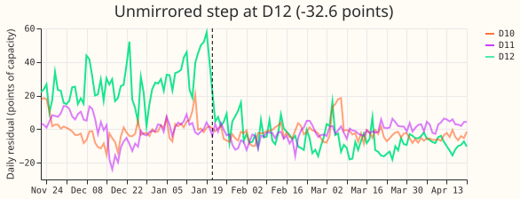
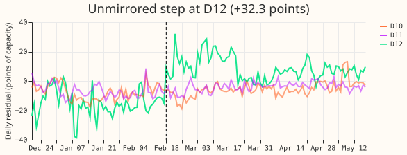
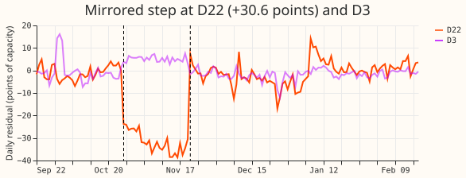

How often does a Primary's demand show a sustained level step that no neighbouring Primary mirrors?
Take-home: a scan of Primary substations' daily demand for level steps cannot yet separate genuine level changes from noise. The scan runs on each Primary's daily weather-corrected demand residual and looks for steps: new levels that last 7 days or more. It finds 166 steps in 93.6 Primary-years (one Primary substation observed for one year), or 1.77 per Primary-year. Synthetic copies of the same residuals, which keep their slow drift but have no abrupt steps, give 1.74 per Primary-year, so the data do not separate the two. The mirror test (does a neighbouring Primary show an opposite-sign step of similar size within 1 day?) passes about as often at the wrong dates as at the true dates. The 0.75 unmirrored steps per Primary-year are therefore an upper bound, and row 4 of the lag-trust design (a test of genuine level changes in the training data) should keep its placeholder rates of 2% and 5% of training rows. For the forecast, rows inside a scan step that no NGED event label covers keep most of the 50/50 mixture of a lagged and a lagless neural-network forecast (B-mix) over the lagged forecast alone, so the scan does not find rows where B-mix fails.







Setup
- Data. The 16 Primaries of experiment 87's loader, 2019-09 to 2026-07, flagged exact-zero half-hours already removed. 4,717 half-hours are missing between the first and last reading of the 16 Primaries (flagged zeros and any other gaps). D15 and D18 drop rows before 2025-03-01. 93.6 Primary-years of valid daily levels.
- Residual. Method (b): a lagless XGBoost median forecast (13 calendar and ERA5 features,
absolute-error objective, 300 rounds), cross-fitted in 6-month blocks, boosters saved as
.ubjunder the experiment's data folder. Method (a), the stored cross-fitted lagless tables of experiment 449, agrees with method (b) on the five stored months (median daily-level correlation 0.90, 80 Primary-months; the lowest is -0.28). ERA5 weather is a lab condition, not available at forecast time. Cadence: not applicable. - Scan. Optimal partitioning of the daily level (squared-error cost, penalty 3 times
ln(n)times a lag-7 noise variance, segments of 7 days or more). A step counts at 3 times the Primary's spread and 2 points. The scan on one Primary takes 0.05 s; the whole experiment took about 5 minutes after the block fits (about 13 minutes). - Compute. CPU only, 2 threads. Reviews: Sonnet plan review, Sonnet code review before the first run (its findings changed the injection sizes and the surrogate scan), Sonnet results review (re-derived the headline numbers; no discrepancy), prose reviews as the PR body records.
Results
- Counts (baseline). 36 mirrored, 70 unmirrored, 60 temporary, 0 unassessable. Rates per Primary-year: 0.39, 0.75, and 0.64. 66 of the 70 unmirrored steps match no labelled event, so 0.71 per Primary-year are unlabelled. The median step is 14.6 points of effective capacity (1.1 MW). Dropping 5 unmirrored steps that start within 3 days of a block boundary gives 0.69.
- Sensitivity of the unmirrored rate. Spread multiple 2: 1.27; 4: 0.43. Floor of 1 or 4 points: 0.75 (the spread sets the threshold at every Primary). Segment of 14 days: 0.52. Penalty 2 times or 5 times: 0.80 and 0.74. Mirror start within 3 days: 0.69. All 15 other Primaries as neighbours: 0.49. The rate moves by a factor of three across the grid.
- Share of days inside an unmirrored step (first 60 days of each): 5.1% at baseline, 2.7% at 4 times the spread. P2 (under 2%) failed at baseline.
- False alarms. Phase-randomised surrogates keep each residual's power spectrum and remove abrupt steps. The scan finds 1.74 steps per Primary-year in them, from 0.0 at D3 and D15 to 8.8 at D4 and 16.8 at D9. At D4 and D9 the surrogates produce more steps than the real series (4.8 and 4.1 per Primary-year). Excluding D4 and D9 the pooled rate is 0.63. Neither meets the 0.2 limit. Nine Primaries (D2, D3, D8, D10, D11, D12, D14, D19, D21) have under 0.7 false alarms per Primary-year (D15 also, but over 1.4 years only). At the 14 Primaries other than D4 and D9 the real series gives 1.44 steps per Primary-year against 0.63 in the surrogates, so about 44% of the steps there could be false alarms; D4 and D9 drive the pooled match.
- Mirror at chance. With the table pairs, 0.217 of the 166 steps are called mirrored at their true start and 0.163 to 0.223 when the start is shifted by 30 to 90 days. With all 15 other Primaries it is 0.554 against 0.518 to 0.614. The tolerance (opposite sign, MW within a factor of 2, start within 1 day, at any neighbour) is too loose, so the mirrored class is not evidence of load shifting.
- Injection (quiet windows, daily residual). Steps of 1.0, 1.5, and 2.0 times the detection threshold are recalled at 0.48, 0.98, and 1.00 (random windows 0.43, 0.91, 0.97), flat in duration at 1.5 times the threshold or more. With a mirror injected at a neighbour, 0.98 of detected steps are classed mirrored at 1.5 times (quiet and random windows alike); for unmirrored injections about 10% are called mirrored by chance. A refit of D2 with a 30-day step of 1.5 times the threshold injected into the half-hourly power (two windows) recovered 11.4 and 11.8 of the injected 11.8 points, so the cross-fit did not absorb it. Recall is high only for large steps; steps of 3 times the spread (1.0 times the threshold at the typical Primary) are recalled at under 0.5, so P3 failed.
- Quiet windows. The step-free rule leaves a median 41,500 of 120,000 half-hours per Primary
as injection windows (D18 keeps 3,900 of 24,400) (
quiet_windows.csv). - Recall on labelled events (experiment 400's corrected table, 184 event-by-Primary rows in 93 events). 11 rows and 10 events are found (a same-sign step starts within 2 days of the onset); of events lasting 7 days or more, 7 of 13 events and 7 of 23 rows. P1 held for events lasting 7 days or more (7 of 13 is above half). This is a lower bound on recall and says nothing about unlabelled events.
- What the scan changes for the stored forecasts (experiment 404, A0-inj against B-mix, 5 months, 1,649,447 rows; a row is "in a scan step" if its origin day or target day lies in the first 60 days of any detected step at its Primary, mirrored, unmirrored, or temporary).
| Row set | Share of rows | B-mix lead (lagged minus B-mix, points) |
|---|---|---|
| Step-free | 66% | 0.64 [0.55, 0.75] |
| In a scan step, unlabelled | 14% | 0.55 [0.45, 0.67] |
| Labelled event only | 14% | 0.37 [0.24, 0.49] |
| Labelled event and scan step | 5% | 0.23 [0.05, 0.40] |
- Reading the table. Removing the unlabelled scan-step rows would cut 18% of the rows not labelled as events and move B-mix's lead on the rest from 0.63 to 0.64, so the scan would not change a score. The intervals of the first two rows overlap. The row sets differ by Primary (the scan flags 58% of the rows of one Primary and none of the rows of three others), so the four row sets are not a matched comparison.
- Candidate list.
candidate_steps.csvbeside this page lists every step (Primary, start day, start date, end day, size in points and MW, class, nearest neighbour and its change, labelled, near a block boundary). 26 mirrored steps match no labelled event (0.28 per Primary-year); given the chance rate, most of them are coincidences. The list is reliable only for the nine Primaries with low false-alarm rates.
Caveats
- NGED's event labels are incomplete. The 184 label rows are a lower bound on events, so the measured recall is a lower bound on the true recall, and an unlabelled candidate may be a real event. Clean rows may hold unlogged events.
- The scan cannot tell three kinds of case. It cannot recognise a genuine level change that a neighbour mirrors by coincidence, it cannot see a step shorter than 7 days, and it cannot say what caused a step. It does not see mirrors at bulk supply points, grid supply points, or unmetered Primaries.
- Injection is into the daily residual with the spread and noise scale fixed at the real series' values (a lab shortcut, checked by one refit).
- Neighbour sets are the pairs in the corrected label table of experiment 395.
- Post-run change. The first false-alarm surrogate (14-day block bootstrap) created steps at the block joins (5 per Primary-year, three times the real count), so it was replaced by phase randomisation after the first run. Injection sizes (multiples of the threshold) and the surrogate's spread were fixed after the code review and before the numbers were read.
What to try next
- Repeat at the nine low-false-alarm Primaries with a stricter mirror rule: a mirror must beat its own shifted-date distribution.
- Use a residual with less drift (a level state or an annual refit) at D4 and D9.
- Keep row 4's 2% and 5% placeholders until a repeat separates the unmirrored steps from noise.